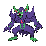

📖 英語版の図鑑説明
Its hairs work like muscle fibers. When its hairs unfurl, they latch on to opponents, ensnaring them as tentacles would.
日本語訳
毛が筋肉繊維のように機能し、広がると触手のように相手に絡みつき捕らえる。
📝 この図鑑文に出てくる英単語
| 英単語 | 意味 | 品詞 | レベル |
|---|---|---|---|
| hairs | 毛(複数形) | 名詞 | 中1 |
| muscle | 筋肉 | 名詞 | 高校 |
| fibers | 繊維(複数形) | 名詞 | 高校 |
| unfurl | 広げる | 動詞 | 大学 |
| latch | しっかりつかむ | 動詞 | 大学 |
| opponents | 相手(複数形) | 名詞 | 高校 |
| ensnaring | わなにかけている | 動詞 | 大学 |
| tentacles | 触手(複数形) | 名詞 | 大学 |
文法ポイント when 〜 は「〜するとき」という意味の接続詞。when のまとまりが、もう一方の文がいつ起こるかを表しています。
💡 英語名「Grimmsnarl」の由来
英語名「Grimmsnarl」は、grim（いかめしい）、grimace（しかめ面）、grimoire（魔導書）とGrimm（グリム童話）を組み合わせた名前と考えられている。フランス語の名前は「Angoliath」で、angoisse（苦悩）、アンゴラウール、Goliath（巨人ゴリアテ）から作られている。
出典 Bulbapedia
📊 オーロンゲの種族値
HP95
こうげき120
ぼうぎょ65
とくこう95
とくぼう75
すばやさ60
合計 510
❓ よくある質問
- オーロンゲの英語名は？
- オーロンゲの英語名は「Grimmsnarl」です。
- オーロンゲの英語名「Grimmsnarl」の由来は？
- 英語名「Grimmsnarl」は、grim（いかめしい）、grimace（しかめ面）、grimoire（魔導書）とGrimm（グリム童話）を組み合わせた名前と考えられている。フランス語の名前は「Angoliath」で、angoisse（苦悩）、アンゴラウール、Goliath（巨人ゴリアテ）から作られている。
- オーロンゲは英語版の図鑑でどう説明されている？
- 「Its hairs work like muscle fibers. When its hairs unfurl, they latch on to opponents, ensnaring them as tentacles would.」と書かれています。日本語にすると「毛が筋肉繊維のように機能し、広がると触手のように相手に絡みつき捕らえる。」という意味です。
オーロンゲは第8世代（ガラル地方ほか）のポケモンです。第8世代（ガラル地方ほか）の英語名一覧 →